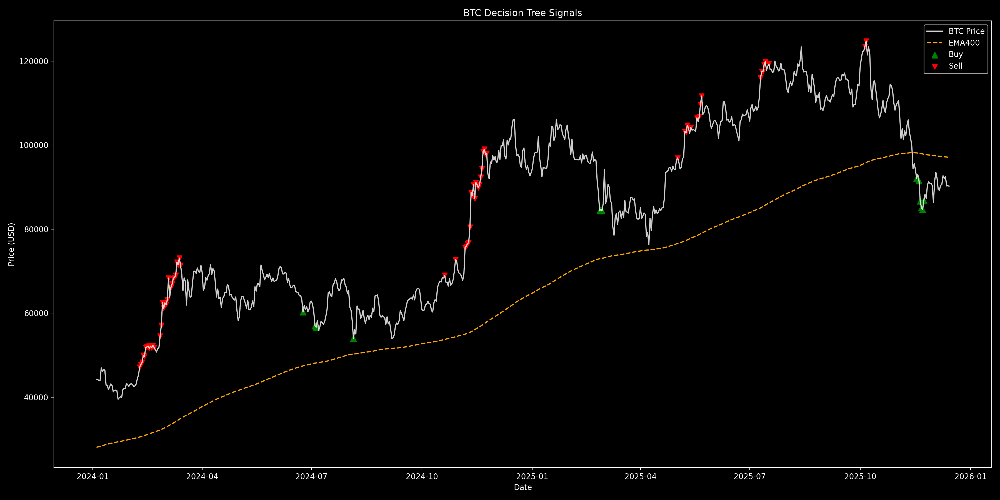

THIS BLOG EXPLORES TRADING STRATEGIES FOR LEARNING — NOT A FINANCIAL RECOMENDATION.
First of all I'm not a profesional trader. Honestly, I do a little investing here and there, but mainly I´m a developer and a curious explorer of data. In this little blog, I'll show you a simple strategy that works suprisingly well with an unpredictable asset like Bitcoin.
So, let´s get started.
Where does this strategy come from?
I´m not sure if this strategy existed before I created it, but I´m a simple and logical person, so I just combine two indicators EMA400 and RSI.
The EMA400 is perfect for smoothing the price and helping you see the overall direction. In a basic candlestick chart, the asset has big ups and downs, and the red and green candles can sometimes distort the real price action. With EMA, all the prices in a given period are considered, but the most recent ones are more important. A long EMA period (like 400) helps us find good buying points: when the price gets very close to or touch this line, it can often be a good moment to buy. When the price moves far away from the EMA, that distance can indicate a good moment to sell.
But that´s not enough. With only one indicator, you can´t build a reliable strategy, you need at leat two. Because I wanted to keep the strategy simple and smooth, I also added the RSI. This indicator helps us indetify moments when the market if oversold or overbought, wich can be usefull for predicting tops and bottoms in the price.
So, I´ve explained the strategy, and now it´s time to choose the asset. I choose Bitcoin because it´s really unpredictable compared to traditional stockts and has this strong technological vision behind it. But you can choose any asset you like.
An this is the point, we have the strategy, the asset and everything comes together, Decision Tree.
Machine Learning - Decision Tree
How Decision Tree works?
Basically, Decision Tree is a supervised Machine Learning algorithm that uses different inputs to make decisions based on previus data. The idea is simple: if we give the algorithm the signals from my strategy, it can learn how the strategy behaves and then replicate it in the future wihout me manually coding the rules.
Instead of me telling the algorithm exacly what to do, the model finds the patterns by itself. It learns, for example, how the EMA400 and RSI interacted in the past and what usually happend next. Once it learns these patterns, we can automate the whole process.
So, with this introuduce, let´s look at some code.
I´will keep the implementation as simple as possible. The goal here is not build a perfect trading bot, but to show how we can traslate a basic strategy into a data that a Decision Tree can undertand and learn from.
Step by step, we'll prepare the data, generate signals, and train the model to se how it reacts to Bitcoin´s price behavior.
1º Import the libraries that we'll need.
import yfinance as yf
import pandas_ta as ta
from sklearn.tree import DecisionTreeClassifier
from sklearn.model_selection import train_test_split
from sklearn.metrics import classification_report
from datetime import datetime
2º Download data historical data using the yfinance API.
today = datetime.now()
start = "2009-12-01"
data = yf.download("BTC-USD", start= start, end=today)
3º Prepare and clean the data.
data.columns = data.columns.get_level_values(0)
data["Close"] = data["Close"].astype(float)
4º Define the trading strategy with indicators.
data["HL2"] = (data["High"] + data["Low"]) / 2
data["EMA10"] = ta.ema(data["HL2"], length=10)
data["EMA55"] = ta.ema(data["HL2"], length=55)
data["EMA400"] = ta.ema(data["HL2"], length=400)
data["RSI"] = ta.rsi(data["Close"], length=14)
data["buy"] = (
((data["Close"] <= data["EMA400"]) |
(data["Close"] > data["EMA400"] * 1.15))
&
(data["RSI"] <= 30)
)
data["sell"] = (
(data["Close"] > data["EMA400"] * 1.25)
&
(data["RSI"] > 70)
)
if data["buy"].any():
first_buy_pos = data["buy"].to_numpy().argmax()
first_buy_ts = data.index[first_buy_pos]
data["sell"] = data["sell"] & (data.index > first_buy_ts)
else:
data["sell"] = False
5º Prepare the machine learning model.
data["signal"] = 0
data.loc[data["buy"], "signal"] = 1
data.loc[data["sell"], "signal"] = -1
data["dist_ema400"] = (data["Close"] / data["EMA400"]) - 1
features = ["RSI", "EMA400", "Close", "dist_ema400"]
X = data[features].dropna()
y = data.loc[X.index, "signal"]
6º Train the model.
X = data[features].dropna()
y = data.loc[X.index, "signal"]
X_train, X_test, y_train, y_test = train_test_split(X, y, test_size=0.2, shuffle=False)
clf = DecisionTreeClassifier(
max_depth=5,
min_samples_leaf=20,
class_weight="balanced"
)
clf.fit(X_train, y_train)
y_pred = clf.predict(X_test)
At this point, we collect the inputs generated ny our strategy and convert them into labels: buy(1), sell(-1), and do nothing / hold(0). These labels, together with the price and indicator values, become the data used to train the model. We keep the last 20% of the data as a test set, so the Decision Tree is evaluated on unseen market conditions.
To train the model, we usea a frew important parameter, max_depth limits how complex the tree can become, helping to avoid overtitting. min_samples_leaf forces each decision to be supported byu a minimum number of data points, making the model more stable. Finally, class_weight="balance" is especially important because buy and sell signals are much rare than hold signals, and this parameter prevents the model form ignoring them.
7º Analyze the results.
print(classification_report(y_test, y_pred))
precision recall f1-score support
-1 1.00 1.00 1.00 77
0 1.00 1.00 1.00 653
1 0.77 0.91 0.83 11
accuracy 0.99 741
macro avg 0.92 0.97 0.94 741
weighted avg 1.00 0.99 0.99 741
Once the model is trained, we analyze the results we can see a very high precision, recall, and F1-score, as well as a strong overall accuracy. However, these metrics should be interpreted carefully. The high scores mainly show that the Decision Tree learned how to reproduce the logic of the strategy from historical data.
Understanding the metrics
When evaluating the model, several metrics are used to understand how well it learned the strategy.
Precision tells us how often the model is correct when it predicts a specific action, such as a buy or sell signal. In other words, it answers the question: when the model makes a decision, how often is it right?
Recall measures how many of the actual signals generated by the strategy were correcly identified by the model helps us understand whether the model is missing important but or sell oportunities.
The F1-score is a balance between precision and recall, giving us a single metric that reflexts both accuracy and consistency.
It´s important to understand what this model can and cannot do.
This Decision Tree is not predicting future prices. Instead, it is learning how to reproduce the behavior of a rule-based strategy using historical data. This high accuracy mainly shows that the model successfully learned the strategy´s logic, not that it can perfectly predict market movements.
Additionally, the model´s performance depends heavily on the quality of the strategy itself. If th stategy performs poorly in certain market conditions, the model will simply learn those same limitations.
Finally, like any model trained on historical data, there is no guarantee that the same patterns will hold in the future. Market behavior can change, and this approach should always be used as an analytical and education tool, not as finalcial advice.
To close the blog, let´s see the model in action using near real-time Bitcoin data. This is where everything comes together: the strategy, the indicators, and the Decission Tree working as a single system.
The goal here is not high-frequency trading, but to demostrate how a trained model can process fresh market data and generate decisions automatically, just like it did during training.

To make the signals easier to see, this plot only shows Bitcoin data from December 1, 2022. If we used all the historical data, the price movements would be squished and it would be hard to spot the buy and sell points. This image is updated almost daily, so you can watch the model in action in near real-time and see how it reacts to the market using the strategy we built.